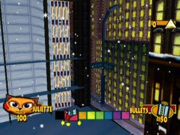
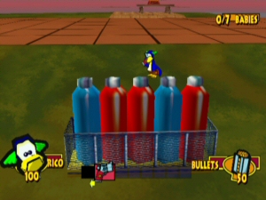
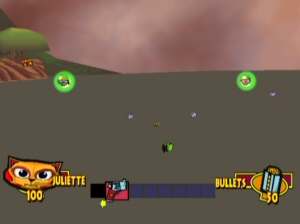
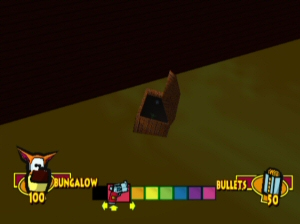

Out of Bounds
Now it's one thing to keep a model out of view from the player - They're likely there to save on loading times,
especially when they're used within the level. But items? That's another story.
There's a whole load of items
that are hidden from the player's view, and unobtainable through normal gameplay. These are all likely put there by
mistake. But hidden Telepoints? Hidden models that don't get used anywhere in any cutscene? Well, take a look for
yourself. These are primarily from
Fur Fighters: Viggo's Revenge, but some of them can also be found in the
same location in other versions of the game too (and this will be stated if so).
Fur Fighter Village
| Image |
Item |
Description |

|
All Key Items |
Ever wondered what would happen if you had all key items at the same time? Here's your chance! This dev
square is just around the corner of Juliette's home. This same area can be seen in Resolute's video in the debug build of the PC
game, though there they appear as Blue Bear heads and work in a slightly different way. |
New Quack City
| Image |
Item |
Description |
|  |
Switched off Lamppost |
It's the lampost for Central Quack and World Quack, hanging in mid-air. But there's a catch - This one is
not switched on. All other posts are switched on, since it's nighttime after all in New Quack. Thus making
this lampost an unused item floating outside. |
 |
Lamppost |
Another lamppost floating behind the copter that takes you to Saving Gwynth. Same design as before. Also
facing the wrong way as before. This (and two others just like it) can be found in all versions of the game.
|
 |
Wooden Fence |
One of the numerous oddities in level design, this backalley, complete with wooden fence, appears behind the
hub walls and can never be seen during gameplay. What's behind it? You'll have to find out for yourself...
Okay, there's nothing. It just drops. |
Lower East Quack
| Image |
Item |
Description |
 |
Ramp |
Credit to Resolute for finding the
original ramp in the debug PC version! This (unused elsewhere) ramp is placed just behind Rico's Telepoint,
but on this version, it's a little hard to see since it the texture is a default one which blends in with the
background. |
 |
2 x Brown Bears |
These poor unfortunate souls can be found way under the sewer, floating in mid-air. They will fall once they
see you (if you can drag a Fur Fighter under there, that is - They're near the cut-off point for auto-fluff).
|
New Quack Subway
| Image |
Item |
Description |
 |
Brown Bear |
Yes, that's right - Even an unused level has something out of bounds. In this case, a stray Brown Bear.
Because there weren't already enough of them in this level, apparently. |
Beaver Power
| Image |
Item |
Description |
 |
4 x Grenades |
There's a lack of Grenades here too, with only two available for the player to grab on their way through
Beaver Power. But don't worry! Four of them are just out of the player's reach in a nice little position. They
look nice though, right? |
 |
4 x Pet Yums Junior |
There's no Juliette Telepoint here in Viggo's Revenge, but there are... Pet Yum cans just beneath God
Machine Valley's entrance. Yeah. These are also in the original game, though you can actually reach them
there, so it was probably just an oversight when converting the game. |
Compound Factions
| Image |
Item |
Description |

|
Large Bullets |
These Bullets can be found just behind Juliette's wall near the gate. In all versions. |
 |
2 x Pet Yums |
These two Pet Yums can be found inside a blue container in Compound Factions. In the early demo, the door to this container was slightly ajar. This was likely going to open up
like the red containers, spewing out Bears. |
 |
Pet Yums Jr. |
This Pet Yums Junior can can be found underneath the rocky terrain near Richard's area in the Dreamcast
version. There's a lot of cans in this area, it's not all that surprising that one slipped beneath the area.
|
Furry Forest
| Image |
Item |
Description |
 |
2 x Brown Bears |
These two are beneath the level. Like most enemies this far down, they'll fall should they somehow see you.
|

|
1 x Panda Bear |
Another bear really far under the level, just floating there. |
God Machine Valley
| Image |
Item |
Description |

|
2 x Peacocks |
It's really hard to get a picture of these two, as they disappear when you get too close and reappear in an
awkward place. |
 |
2 x Peacocks
3 x Crocodiles
2 x Brown Bears |
Another shot of the above pair, plus some additional enemies, all too far under the level to see normally.
Leftovers from the PC/DC versions probably, since only a single Crocodile spawns above them. |
 |
2 x Planes |
Two small "planes", far away from the rest of the level. Your guess is as a good as mine. |

|
2 x Planes |
The water is duplicated with a different texture far, far below the level. See those tiny red pixels at the
bottom waterfall? That's Rico. |
Beaver Dam
| Image |
Item |
Description |
 |
Brown Bear |
This guy starts so far under the level it's a surprise he doesn't get automatically fluffed. Since he's
actually in a water area, he rises up to just beneath the ship's pool. Still out of bounds though, so there's
no way to actually meet him unless you get under here somehow. |
 |
Juliette Telepoint |
One of the most bizarre places to find a Juliette Telepoint, considering there's another one in the level
incredibly close by. Stuck between the walls near the cement mixer in Beaver Dam, one can only wonder just why
it's even there. |
 |
Pet Yums Jr. x 3 |
Credit to Childemera for finding these! These 3 cans are placed just underneath the tunnel, so you can't
grab 'em. |
Saving Juanita
| Image |
Item |
Description |
 |
1 x Jr. Pet Yums |
OF ALL THE PLACES TO HAVE AN OUT OF BOUNDS CAN. Really. |
Cape Canardo
| Image |
Item |
Description |
 |
Chang Telepoint
& 1 Rocket |
Chang's Telepoint is placed on the ground just fine in all but Viggo's Revenge, where it has been thrust
under the level like so. Fur Fighters can still see it, though, even if you can't. There's also a Rocket
nearby, surrounded by invisible barriers. |
 |
2 x Rocket Box &
1 x Jr. Pet Yums
|
Just under Jules' Telepoint is a Junior Pet Yums can and a couple of Rocket boxes. But hey! You can reach
the Rocket Launcher, at least? |
 |
Brown Bear
& Crocodile |
Thanks to Childemera for finding this! When you explore enough of Cape Canardo, these two show up. But these
two spawn above you, right in the glass window. |
VAB Building
| Image |
Item |
Description |
|  |
Unused Bottles |
Discovered originally by Sergeant Viggo, these bottles can be found inside a building in the VAB Building in
all versions of the game. You can stand on them, but that's about it. |
 |
2 x Crocodiles |
Yep, even enemies exist outside the level boundaries, standing idly by in thin air outside the computer room
in the VAB Building. What happens when you approach them? Well, the same thing that happens when cartoon
characters realise they're standing on thin air - They fall. |
 |
Brown Bear |
This bear is close to the cut-off point underneath the VAB Building. Shortly after, he will fall to his
imminent doom. Meet you in The Bad Place, mate. |
 |
Armadillo |
Thanks to Childemera for this one! One of the Armadillos actually spawns inside one of the tanks. You can
hear him, though. |
VLF Facility
| Image |
Item |
Description |
 |
Shotgun &
2 x Shotgun Cakes |
Hidden near Roofus' daughter Jean, this Shotgun & ammo combo can be found inbetween two areas, floating in
nothingness. |
 |
Button |
This button can be found in the middle of the swampy area found in the VLF Facility. Shooting it or tapping
it does nothing, however, much like the almost hidden button in the World Quack Centre (as seen in trivia). |
Space Station Meer
| Image |
Item |
Description |

|
Water Crater |
This can be found floating outside the station in Viggo's Revenge. More info over at unused elements. |
 |
Crocodile |
Thanks to Childemera for this one! One of the Crocodiles in the rain dome is actually stuck inside one of
the trees. I'm sure there's a tree hugger joke somewhere. |
Dinotopolis
| Image |
Item |
Description |

|
3 x Shotgun Cakes |
These can be found just below the entrance to Saving Esmerelda. Kinda weird, since they're so perfectly
placed in between all other areas, directly in the center. |
Dinos Downstairs
| Image |
Item |
Description |

|
Bungalow Telepoint |
Located just outside the starting point in Dinos Downstairs, near where the stove is. Probably just an
easier way to get Bungalow out during the testing process, considering he's needed almost instantly in this
level. There's also a default texture clone of the Dinosaur Kid, but developer stuff like that is rampant
outside the level boundaries anyway. |
Dinos Upstairs
| Image |
Item |
Description |
 |
2 x Small Shells |
These two Shells, can be found underneath the shower in Dinos Upstairs. Along with the rest of the rather
large bathroom plug. Maybe when the lava was drained they were meant to pop up? The world may never know. |
The Rumpus Room
| Image |
Item |
Description |

|
1 Rocket |
Just under the floor near the first cabinet of The Rumpus Room, there's a lone Rocket. That's... Really all
that can be said. |
 |
Rock |
By far one of the most bizarre items to be found outside the level. A rock. One that can be perched on, that
we would see during normal gameplay, far away from the rest of the level. Bizarre Creations certainly like
living up to their name. |
 |
Pet Yums |
This is at the side of the jukebox. Or, it should have been. It's placed just beside the wall there, so you
can't actually get it. |
 |
Pet Yums Jr.
& Large Bullets |
These can be found just underneath the basement floor, no doubt meant to be on that floor. |
 |
Shotgun Barrel |
It's hard to actually see this, since it's so close to the floorboards. Even if it was actually there
though, it would still be floating in the air. That Pet Yums can be seen better below. |
 |
Pet Yums Jr. |
Between the two stairs is a single can of Pet Yums Junior. Just above it is the laundry room (with the
Washmeister), but even pushing it up would cause it to be only half in the area. |
 |
Large Bullets |
Opposite the Pet Yums can at the back of the jukebox is a large bullet pack. Like the Pet Yums, it was
likely going to be obtained by going down the side. |
 |
2 x Grenade Boxes |
Two boxes of Grenades hide under the garage in the Dreamcast game. |
20,000 Fluffs B.C.
| Image |
Item |
Description |
 |
2 x Small Thermal |
These two Thermals can be found just underneath the cardboard box in 20,000 Fluffs B.C.. But there's no way
to actually get in there. There is, however, a way to get in one of the other boxes, so maybe that was the
plan for these too? Also, note the extra image on the side of the box, which is different to the outside. |
The Fluff that Time Forgot
| Image |
Item |
Description |
 |
Pet Yums Junior |
Fluff isn't the only thing time forgot in this level - There's a small can of Pet Yums under the level. |
Jungle of Despair
| Image |
Item |
Description |
 |
Foliage |
Present in all versions of the game, a bunch of foliage is placed underneath the 'teleport' temple, likely
from an earlier version of the game. |
Temple of Gloom
| Image |
Item |
Description |
 |
Chameleon |
Credit to Jum for pointing me in the
right direction for this! This Chameleon is under the level in Viggo's Revenge, but much like the trail of Pet
Yums cans in Beaver Power, it's in the right place in predecessors. |
 |
Bungalow Telepoint |
Your guess is as good as mine. Bungalow's Telepoint is close enough for characters to notice something under
the ground near the maze in the Temple of Gloom, even though the player can't see it. |
 |
Large Bullets |
In the original games, this lone ammo is underneath the portal room. |
 |
Brown Bear |
This guy is far below Bungalow's Telepoint. He's so far down that by the time he sees you, he's usually
unaffected by the death pit cut off. |
The Bad Place
| Image |
Item |
Description |
 |
Plank |
Suddenly the Ed, Edd n Eddy theory makes a little more sense. Why Plank? Why are you floating outside the
start of The Bad Place?! |
 |
Pet Yums |
You know, this item would be much more helpful if it had actually been placed inside the platform of
Bungalow's nightmare. |
 |
6 x Bullets |
Wow, Bungalow's nightmare really is a nightmare. Whilst Pet Yums are in place, all of these bullets are
underneath the level in the Dreamcast version. |
Raiders of the Lost Fluff
| Image |
Item |
Description |
|  |
Pet Yums Jr. x 3
Shotgun
Seeker Launcher
Shotgun Cake
Bomb Launcher
Tweek Telepoint
Roofus Telepoint |
If you've been to the Comparisons page or just own both versions of the game,
you'll know what happened here. They removed this area in Viggo's Revenge, but all the items that were going
to be there stayed there. Now, they float endlessly in this area, away from the players. Please note that the
Bomb Launcher is just to the left of this image. |
 |
2 x Thermal |
These thermals are placed just underneath this area. At least they're not leftovers this time. |
HMS Viggolina
| Image |
Item |
Description |
 |
Carrier Hood |
This is placed waaaaay too far under the level. It's likely this is used for cutscene purposes, but you can
still stand on it (if you have the debug invincibility on, of course). I know, I said I wouldn't list these,
but this was one of the first things listed here, so we'll keep it for now. |
The V-100
| Image |
Item |
Description |
 |
Iron Plank |
This thing is randomly hanging out far away from the rest of the level. You can stand on it, too. |
|  |
Treasure Chest |
One of the strangest things out there. This treasure chest is hidden down the side of The V-100. It even has
goodies in it! It's so strange that it gets more coverage on our Unused Elements page.
|
 |
Large Bullets |
These are kinda in the middle of nowhere in the Dreamcast version. |
 |
Brown Bear & Pipes |
Credit to Childemera for finding this! This Bear and a set of pipes are above the ceiling in one of the
hallways. |
Secret Island
| Image |
Item |
Description |
| |
Pet Yums Jr. |
This can is placed mid-air just outside the vault entrance. |
 Back to
top
Total Fur Fighters is © 2001-2018 Fur Fighter Master aka RadSpyro. Website design © Kari of
xemnas.net. Fur Fighters belongs to Muffin Games.
Back to
top
Total Fur Fighters is © 2001-2018 Fur Fighter Master aka RadSpyro. Website design © Kari of
xemnas.net. Fur Fighters belongs to Muffin Games.